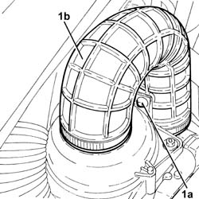

1048A40 sleeve from air cleaner to flow meter - r + r
- Path
- Procedures > 10 ENGINE > 1048 ENGINE AIR SUPPLY CIRCUIT > 1048A VACUUM AIR CIRCUIT > 1048A40 sleeve from air cleaner to flow meter - r + r
- Kind
- repair procedure (removal / refitting; the operation number is the code)
- Applies to
- all engines; all production periods
- Interactive page
- https://sloeber94.github.io/elrnDB-fDbl/en/#/2584486
Applies to: all engines; all production periods
 Removing
Removing
 Refitting
RefittingProceed with the removal 5530B10 battery - r+r .
Proceed with the removal 5530B52 Battery DRIP TRAY/SUPPORT - R.R. .
1. Loosen the bands, release the pin (1a) from the air filter cover and remove the duct from the air filter to flow meter (1b).

Applies to: all engines; all production periods
Refitting
RemovingRefit in its seating the duct from air filter to flow meter, and secure it with its bands and the pin.
Proceed with the refitting 5530B52 Battery DRIP TRAY/SUPPORT - R.R. .
Proceed with the refitting 5530B10 battery - r+r .
Topics linked from this page (2)
Topics that link to this page (5)
- 1088D10 lower sleeve for coolant outlet from radiator - r + r
- 1088D14 upper sleeve for coolant inlet to radiator - r + r
- 1088D23 sleeve from thermostat to rigid pipe carrying fluid to pump - r r
- 1088D24 rigid pipe for coolant inlet to water pump - r + r
- 1088D96 hose from rigid pipe for coolant to heat exchanger and exhaust gas water heat exchanger for egr system r r